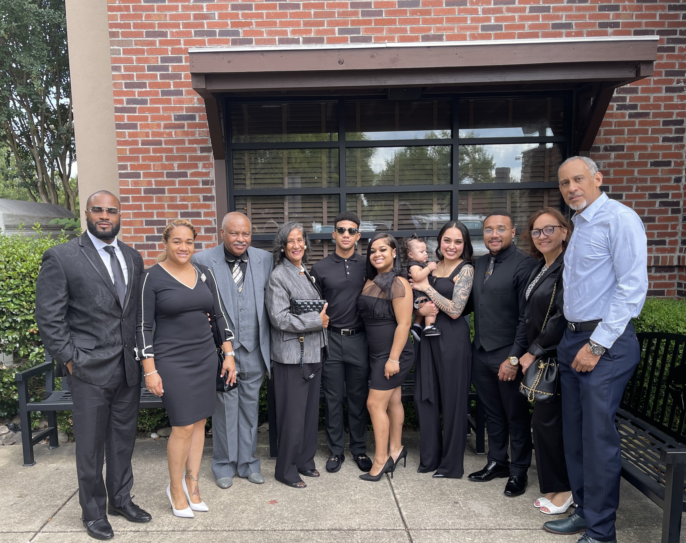

Welcome to my About me page. Here you will find all things about me, myself, and I
My name is Roel and I was born in Fayetteville, North Carolina on March 27th 2000.
My immediate family consists of my mom, stepdad, my older brother, and my younger sister.
Almost two years ago, we were introduced to the newest member of our family Presley, my one year
old niece.

We resided in Fayetteville for eight years until my stepdad had recieve military orders to be stationed at Fort Bliss in El Paso, Texas. This came as a big change; however, I do not regret my four years there. This is where I met some of my best friends who I still keep in contact with to this day. Following my stepdads' retirement in 2014, we returned to the east coast living in Augusta, Georgia. I would spend the next six years here where I acquired more lifelong friends. Following my senior year of High school in 2018, I hadn't adequately prepared myself for college, and I would end up missing the first semester opting to work instead.
During my semester break, I was working as a copy and print specialist at OfficeMax. I felt as though I learned alot while working there. I always had a passion for graphic design so it was interesting developing prints and creative projects for customers. Retail in general also builds good communication skills which is useful in all aspects of daily life. Following the end of my break, I began the winter semester at Augusta University majoring in Computer Science. I would finish my entire freshman year until I decided to join the United States Air Force.
I joined the Air Force March 3rd, 2020, a very significant time in the world as the COVID-19 pandemic had occurred. While in basic training, we marched six feet from each other and initially had to create masks out of our own t-shirts. The experience all in all was bittersweet. Alot of events were cancelled and my unit was restricted to the barracks for the most part. I did however meet new people, and we made the most out of the situation. Following basic training, I went to technical training at Keesler AFB in Biloxi, Mississippi. I arrived in the summer and was greeted by the heavy humidity. I can recall a time walking outside and my glasses fogging almost immediately as I walked outside.
Technical training lasted about six months; and following that, I am where I have been for almost three years now: Phoenix, Arizona. I work as a calibration technician, and my job is to ensure that maintenance equipment is calibrated. In the simplest sense, I am the guy that fixes the the tools that the Mechanics use to fix the fancy aircraft.
For years, my friends and I would spend alot of time watching movies and tv shows. Unlike most movie-goers however, we would spend hours discussing the small details and overall plot. By no means do I consider myself an expert however, I do think I can at least provide an interesting perspective on the topics I speak on.
I think critiquing the media one consumes gives a better appreciation for it. It also keeps the reviewer honest in their judgement, as no one wants to hear someone provide radical opinions on subjects they can't defend.